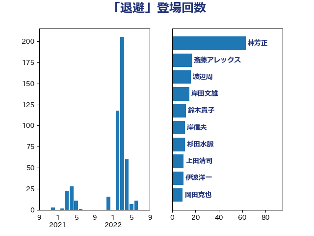

単語「退避」

| 林芳正 | 自由民主党 | 63 回 |
| 斎藤アレックス | 国民民主党 | 17 回 |
| 渡辺周 | 立憲民主党 | 16 回 |
| 岸田文雄 | 自由民主党 | 15 回 |
| 鈴木貴子 | 自由民主党 | 12 回 |
| 岸信夫 | 自由民主党 | 11 回 |
| 杉田水脈 | 自由民主党 | 11 回 |
| 上田清司 | 国民民主党 | 10 回 |
| 伊波洋一 | 無所属 | 10 回 |
| 岡田克也 | 立憲民主党 | 9 回 |
| 茂木敏充 | 自由民主党 | 9 回 |
| 國場幸之助 | 自由民主党 | 8 回 |
| 松野博一 | 自由民主党 | 7 回 |
| 田島麻衣子 | 立憲民主党 | 7 回 |
| 美延映夫 | 日本維新の会 | 7 回 |
| 佐藤正久 | 自由民主党 | 6 回 |
| 古川禎久 | 自由民主党 | 6 回 |
| 木原誠二 | 自由民主党 | 6 回 |
| 逢坂誠二 | 立憲民主党 | 6 回 |
| 伊藤俊輔 | 立憲民主党 | 5 回 |
| 羽田次郎 | 立憲民主党 | 5 回 |
| 高橋光男 | 公明党 | 5 回 |
| 玄葉光一郎 | 立憲民主党 | 4 回 |
| 田中健 | 国民民主党 | 4 回 |
| 藤岡隆雄 | 立憲民主党 | 4 回 |
| 赤嶺政賢 | 日本共産党 | 4 回 |
| 阿部知子 | 立憲民主党 | 4 回 |
| 太栄志 | 立憲民主党 | 3 回 |
| 小野泰輔 | 日本維新の会 | 3 回 |
| 小野田紀美 | 自由民主党 | 3 回 |
| 山田美樹 | 自由民主党 | 3 回 |
| 本田太郎 | 自由民主党 | 3 回 |
| 浅田均 | 日本維新の会 | 3 回 |
| 舞立昇治 | 自由民主党 | 3 回 |
| 鈴木庸介 | 立憲民主党 | 3 回 |
| 青木愛 | 立憲民主党 | 3 回 |
| 塩崎彰久 | 自由民主党 | 2 回 |
| 岩谷良平 | 日本維新の会 | 2 回 |
| 後藤茂之 | 自由民主党 | 2 回 |
| 徳永久志 | 立憲民主党 | 2 回 |
| 朝日健太郎 | 自由民主党 | 2 回 |
| 本村伸子 | 日本共産党 | 2 回 |
| 杉本和巳 | 日本維新の会 | 2 回 |
| 梶山弘志 | 自由民主党 | 2 回 |
| 清水貴之 | 日本維新の会 | 2 回 |
| 磯崎仁彦 | 自由民主党 | 2 回 |
| 神津たけし | 立憲民主党 | 2 回 |
| 稲田朋美 | 自由民主党 | 2 回 |
| 萩生田光一 | 自由民主党 | 2 回 |
| 藤川政人 | 自由民主党 | 2 回 |
| 馬場伸幸 | 日本維新の会 | 2 回 |
| 井上哲士 | 日本共産党 | 1 回 |
| 今井絵理子 | 自由民主党 | 1 回 |
| 保岡宏武 | 自由民主党 | 1 回 |
| 大塚耕平 | 国民民主党 | 1 回 |
| 大野泰正 | 自由民主党 | 1 回 |
| 小山展弘 | 立憲民主党 | 1 回 |
| 山添拓 | 日本共産党 | 1 回 |
| 山田勝彦 | 立憲民主党 | 1 回 |
| 山田賢司 | 自由民主党 | 1 回 |
| 川合孝典 | 国民民主党 | 1 回 |
| 後藤祐一 | 立憲民主党 | 1 回 |
| 打越さく良 | 立憲民主党 | 1 回 |
| 柴田巧 | 日本維新の会 | 1 回 |
| 森本真治 | 立憲民主党 | 1 回 |
| 河西宏一 | 公明党 | 1 回 |
| 片山大介 | 日本維新の会 | 1 回 |
| 緒方林太郎 | 無所属 | 1 回 |
| 藤巻健太 | 日本維新の会 | 1 回 |
| 藤木眞也 | 自由民主党 | 1 回 |
| 赤羽一嘉 | 公明党 | 1 回 |
| 辻清人 | 自由民主党 | 1 回 |
| 鈴木宗男 | 日本維新の会 | 1 回 |
| 鈴木英敬 | 自由民主党 | 1 回 |
| 音喜多駿 | 日本維新の会 | 1 回 |
| 馬場成志 | 自由民主党 | 1 回 |
| 高橋千鶴子 | 日本共産党 | 1 回 |